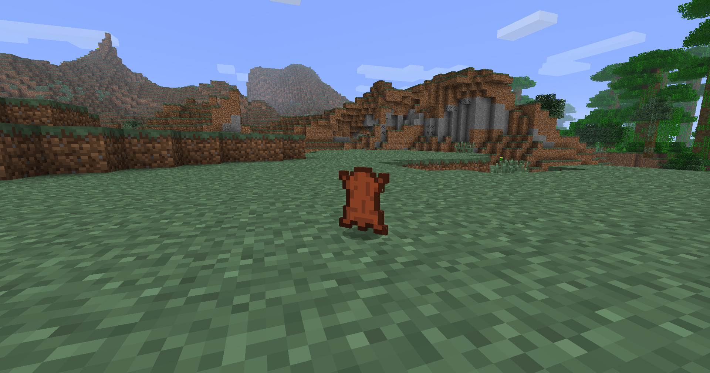

Leather
Leather is an item which is used to craft items as books, armor and bundles.

Obtaining
Smoking
| Using a smoker, you can turn rotten flesh into leather |


|
|---|
Leather is an item which is used to craft items as books, armor and bundles.

| Using a smoker, you can turn rotten flesh into leather |
|
|---|